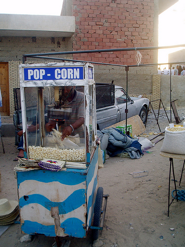
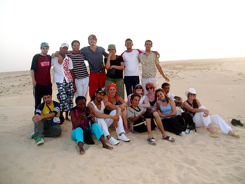
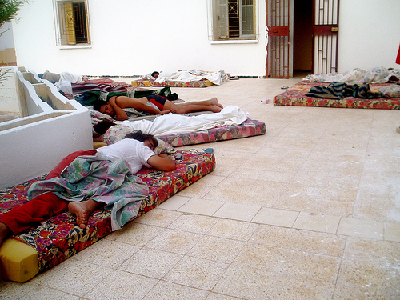
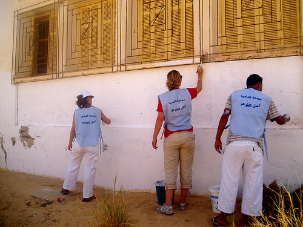
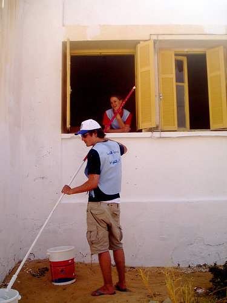

Projecten
Overig
Project: Chantier internationale de Nefta (Tozeur), Tunesië
Het project waaraan ik heb deelgenomen samen met nog vijftien mensen uit verschillende landen (Canada, Frankrijk, Spanje en Tunesië), heeft twee doeleinden allereerst de bescherming van dit stuk van de oase tegen de dreigende verwoestijning, d.m.v. het oprichten van ‘barricades’. Ten tweede staat de culturele uitwisseling centraal. Het kamp wordt jaarlijks georganiseerd door de Tunesische vrijwilligersorganisatie ATAV (Association Tunisienne d’Action Volontaire) in samenwerking met plaatselijk groeperingen die zich bezighouden met het millieu en lokale ontwikkeling. De lokatie waar dit plaatsvindt: Nefta. Ik gebruik deze plek ook meteen om het een en ander te vertellen over het klimaat (lees: te waarschuwen voor de hitte.) Het is warm in Nefta. Zo warm zelfs dat er vanaf twaalf uur ’s middags tot een uur of vijf eigenlijk geen activiteit mogelijk is. Daar staat wel tegenover dat het leven in het dorp tot diep in de nacht doorgaat. Ook ’s ochtends vroeg is het heel aangenaam. Het is dus laat naar bed en vroeg opstaan als je in Nefta van de je…eh ‘etmaal’ wilt profiteren. Het slaapgebrek kun je ’s middags goedmaken tijdens de siesta.

maison de jeunesse
Toen ik maandag zeven juli in Nefta aankwam (na een treinreis van pak ‘m beet tien uur), samen met twee Spaanse jongens die ik al in Tunis had ontmoet, was het grootste gedeelte van de groep al gearriveerd. We werden onder leiding van de Tunesische jongens meegenomen naar een restaurant in het dorp. Tijdens het eten had iedereen al in de gaten dat we het de komende twee weken best met elkaar zouden uithouden. Het groepsgevoel was vanaf het begin goed.
We verbleven met z’n allen in het maison de jeunesse, de jeugdherberg van Nefta. Een eenvoudig doch geriefelijk onderkomen aan de rand van het dorp. Het was er iedere dag een komen en gaan van lokale jeugd. Want, naast dat het gebouw onderdak bood aan achttien vrijwilligers, was het tevens een soort buurthuis waar t.v. werd gekeken, gehangen, gekookt, gedanst en waar je ook Kong-fu kon leren.
Jongens en meisjes sliepen afzonderlijk, elk in een andere vleugel van het gebouw. In iedere kamer was plaats voor vier bedden. Uiteindelijk heeft niemand meer dan twee nachten in zijn kamer geslapen. Dat was te warm, veel te warm. Iedere avond sleepten we dan ook onze matrasjes naar de het terras (met uitzicht over de oase) om met z’n allen op een soort hoop onder de sterren te slapen.

het werk
Op de eerste avond van het kamp werd ons tijdens een eerste bijeenkomst duidelijk gemaakt hoe de komende weken er nu eigenlijk precies uit zouden zien. Later bleek dit strakke programma eigenlijk best flexibel, maar in grote lijnen was de dagindeling als volgt. ‘s Ochtends werken. Officieel vanaf acht uur (in de praktijk werd dat vaak half negen of nog later) tot een uurtje of half twaalf. Dan lunch, gevolgd door het middagdutje (af andere activiteiten om aan de hitte te ontstanppen, zoals: zwemmen of een bezoek naar het café met airconditioning) en daarna namiddag-/avondprogramma.
De eerste dagen hebben we de jeugdherberg in de verf gezet samen met mensen uit het dorp. Het gebrek aan materiaal maakte het niet mogelijk om allemaal tegelijkertijd te werken. We wisselden elkaar af. Niet zo erg eigenlijk, want aan het einde van de ochtend was het zo heet dat niemand het langer dan een halfuur in de zon uithield. De rest van de dagen hebben we gewerkt in de Corbeille. De werkzaamheden waren erg divers en niet zo zwaar. We hebben geholpen met het bouwen van muurtjes en schuttingen. We hebben stenen gesjouwd en palmbladeren klaargemaakt voor verdere verwerking. Verder nog wat plastic geraapt en op de laatste dag hebben we iedere twee olijfboompjes geplant, als kroon op het werk.
De lokale werkmannen die we hielpen stelden onze aanwezigheid zeer op prijs. Fotoalbums werden van huis gehaald en er werd voortdurend munt-thee aangedragen. De Tunesische gastvrijheid verzet zich eigenlijk tegen het principe van de werkende gast: ‘Ben je niet moe?’. ‘Ga lekker in de Schaduw zitten’. ‘Wil je nog een kopje thee?’ Het koste af en toe moeite om je steentje te kunnen bijdragen.
 
De regie en organisatie was niet altijd even strak. Er moest veel worden gewacht en soms moest er met behulp van eigen inzicht worden gekozen uit twee tegenstrijdige opdrachten. Ook het gebrek aan materiaal was weer een probleem. Toch hebben we aardig wat werk verricht. Op den duur wen je aan de manier waarop de dingen gaan in Nefta. Je horloge afdoen helpt al heel erg.
De groep was leuk, de andere mensen waren aardig. Dat maakte het werk ook leuk. Ik vond het daarbij erg leuk, interessant en waardevol om mee te maken wat het inhoudt om op een plek als Nefta te leven en te werken. Als toerist krijg je een dergelijk inzicht niet.
na het werk
Na het werk was er lunch. Tweemaal daags toverde onze ‘chef’, hier en bijgestaan door ons, een warme Tunesische maaltijd op tafel. En dat met slechts een snijplankje en een gaspitje tot zijn beschikking. Na de lunch was het programma vrij. Zoals gezegd kon je dan verschillende dingen doen.
In de namiddag waren we vaak ook vrij om dingen te organiseren. Zo hebben we natuurlijk de verplichte kamelenrit gemaakt, en we zij een paar keer naar het grotere stadje Tozeur gegaan. Het georganiseerde programma, dat meestal ‘s avonds plaatsvond was altijd leuk. Het varieerde van een disco-bbq in de woestijn tot een bezoek aan een Arabische klucht in het openluchttheater van Nefta. Daarna gingen we dan soms nog wat drinken in een café onder de palmen voordat we – best moe – onze matrasjes naar buiten sleepten. We gingen natuurlijk pas echt slapen als de kooltjes van de shi-sha waren opgebrand en iedereen was uitgekletst. In de verte klonk dan meestal nog de trommelmuziek van een of ander bruiloftstfeest.
weer terug
Nefta was een onvergetelijke ervaring. De hier en daar gebrekkige organisatie of de soms moeizame communicatie tussen de beleiders en de vrijwilligers heeft daar niets aan af gedaan. In ‘le maison de jeunesse’ in Nefta voelden achtien mensen, allemaal met een heel verschillende achtergrond, zich twee weken lang een famillie. Dat komt omdat we samen hebben gewerkt, geleefd, gedanst en lol getrapt op een bijzonder stukje aarde dat nu dertig olijfboompjes, een lange schutting en twee stenen muurtjes rijker is. Ik ben al weer enige tijd terug uit Tunesië. Na het kamp in Nefta heb ik nog een week door het land getrokken samen met drie meisjes die ik daar heb ontmoet. Met een aantal mensen van het kamp heb ik nog geregeld contact. We proberen een reünie te organiseren. Ik zal de ervaring nooit vergeten, en dat komt niet alleen door de zinderende hitte.
Foto’s: met dank aan Dorothée Giret > http://www.flickr.com/photos/dot_on_yellowbrickroad/